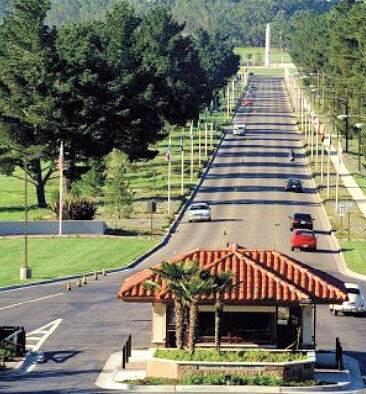

Vandenberg SFB
California

West Coast space and missile launch site. In 1964 a team filming its launches from Big Sur became the subject of claims that a UFO disabled a missile warhead, and a former security policeman has described being abducted from one of its Minuteman sites that September (see the claims ledger). 1,2
Open in the interactive Watcher
Related
- A UFO shot a beam at an Atlas missile and disabled its warhead Claim
- A Vandenberg missile guard was taken aboard a craft by non-human beings in 1964 Claim
- Robert Jacobs Person
- Richard Barth Person
Sources
- Big Sur UFO Wikipedia
- Ex-USAF Security Policeman Tells of Being Abducted by Aliens (Robert Hastings) UFOs & Nukes, Nov. 16, 2025